CS184/284A Spring 2025 Homework 3 Write-Up
Link to webpage: (TODO) cs184.eecs.berkeley.edu/sp25 Link to GitHub repository: (TODO) cs184.eecs.berkeley.edu/sp25
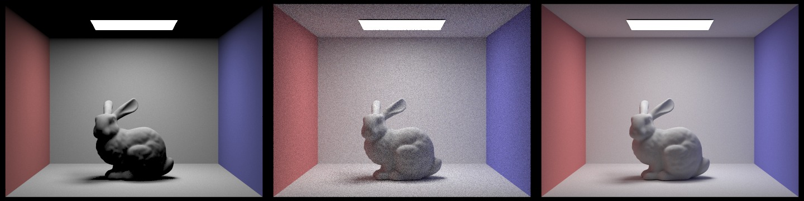
Overview
In this homework, we built a physically-based path tracer from scratch. Starting from raw camera rays all the way up to global illumination, we implemented the core systems that make rendering work: ray generation, primitive intersection (triangles and spheres), a bounding volume hierarchy for acceleration, direct and indirect lighting, and adaptive sampling to reduce noise efficiently.
The most interesting thing we took away from this was how much the rendering pipeline is really just a chain of approximations - each step is an estimate, and the whole thing converges to something physically plausible only when you get all the pieces right. A concrete hurdle was getting triangle intersection and BVH traversal to agree on t bounds; once we consistently updated max_t and handled epsilon offsets, the "missing triangles" artifacts disappeared and the rest of the pipeline started to behave.
Part 1: Ray Generation and Scene Intersection
Ray Generation and the Rendering Pipeline
The rendering pipeline starts at the camera. For each pixel on the screen, we generate one or more rays that pass through the virtual camera sensor into the scene. To do this, we convert the pixel's normalized image coordinates \((x, y) \in [0,1]^2\) into camera space, mapping them linearly onto a sensor plane at \(Z = -1\). The sensor extents are defined by the horizontal and vertical field-of-view angles:
\[ \text{sensor}_x = \left(-\tan\!\left(\frac{hFov}{2}\right),\; \tan\!\left(\frac{hFov}{2}\right)\right), \quad \text{sensor}_y = \left(-\tan\!\left(\frac{vFov}{2}\right),\; \tan\!\left(\frac{vFov}{2}\right)\right) \]So a normalized image coordinate \((x, y)\) maps to a camera-space point:
\[ p_{cam} = \left((2x - 1)\tan\!\left(\frac{hFov}{2}\right),\;\; (2y - 1)\tan\!\left(\frac{vFov}{2}\right),\;\; -1\right) \]
The camera-space ray originates at \((0,0,0)\) and points toward \(p_{cam}\). We then transform this ray into world space using the camera-to-world rotation matrix c2w, with the origin translated to pos. The direction gets normalized, and min_t / max_t are initialized to the near and far clip planes.
For pixel sampling (raytrace_pixel), we average ns_aa rays per pixel. Each sample draws a random 2D offset from gridSampler, adds it to the pixel corner, normalizes by image dimensions, and calls generate_ray. The radiance estimates from est_radiance_global_illumination are averaged together to produce the final pixel color.
Triangle Intersection
We used the Möller Trumbore algorithm for ray-triangle intersection. Given a ray \(\mathbf{r}(t) = \mathbf{o} + t\mathbf{d}\) and a triangle with vertices \(P_1, P_2, P_3\), the algorithm solves for \((t, u, v)\) - where \(u\) and \(v\) are barycentric coordinates - using Cramer's rule applied to the system derived from setting the ray equal to a point inside the triangle:
\[ \begin{bmatrix} t \\ u \\ v \end{bmatrix} = \frac{1}{\mathbf{S_1} \cdot \mathbf{E_1}} \begin{bmatrix} \mathbf{S_2} \cdot \mathbf{E_2} \\ \mathbf{S_1} \cdot \mathbf{S} \\ \mathbf{S_2} \cdot \mathbf{d} \end{bmatrix} \]where \(\mathbf{E_1} = P_2 - P_1\), \(\mathbf{E_2} = P_3 - P_1\), \(\mathbf{S} = \mathbf{o} - P_1\), \(\mathbf{S_1} = \mathbf{d} \times \mathbf{E_2}\), \(\mathbf{S_2} = \mathbf{S} \times \mathbf{E_1}\).
An intersection is valid when \(t \in [\texttt{min\_t}, \texttt{max\_t}]\) and \(u \geq 0\), \(v \geq 0\), \(u + v \leq 1\). If valid, we update max_t and fill in the Intersection struct. The surface normal is interpolated from the three vertex normals using the barycentric coordinates \((1 - u - v, u, v)\).
Sphere Intersection
For spheres, we substituted the ray equation into the sphere equation \(|\mathbf{r}(t) - \mathbf{c}|^2 = R^2\) and solved the resulting quadratic. If the discriminant is negative there's no intersection; otherwise we take the smaller root that still falls within [min_t, max_t]. The surface normal at the hit point is just the normalized vector from the sphere center to that point.
Normal Shading Results
Below are normal-shaded renders for a few small scenes.
|
|

|

|
Part 2: Bounding Volume Hierarchy
To accelerate intersection tests, we built a BVH over all primitives. Each node stores a bounding box and a range of primitives; we compute a centroid bounding box, split along its longest axis, and partition at the median. We recurse until a small leaf threshold is reached. At render time, rays are first tested against node bounding boxes; only if the box is hit do we test primitives inside. This pruning is crucial for meshes with tens or hundreds of thousands of triangles.
Normal Shading on Large Scenes
|
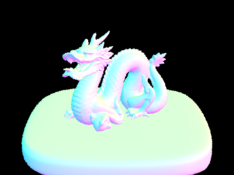 |
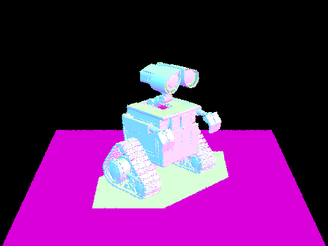 |
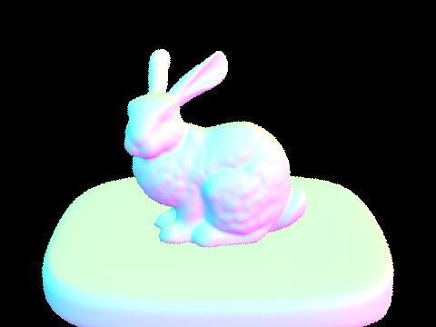 |
Timing Comparison (BVH vs. No BVH)
We compared render times on two moderately complex scenes at 480x360 with 1 sample per pixel. With BVH enabled, both scenes render in well under a tenth of a second; without BVH, the same scenes slow down by one to two orders of magnitude because every ray tests against every primitive. The bunny scene is the most dramatic: BVH reduces average intersection tests per ray from ~33k down to ~11.
| Scene | With BVH | No BVH | Speedup |
|---|---|---|---|
| bunny.dae | 0.075 s | 18.70 s | ~250x |
| cow.dae | 0.055 s | 2.75 s | ~50x |
Part 3: Direct Illumination
We implemented direct lighting in two ways: uniform hemisphere sampling and light importance sampling. For each hit point, we sample an incoming direction, cast a shadow ray to check visibility, and accumulate the BSDF-weighted contribution divided by the PDF. Importance sampling explicitly targets light sources and reduces variance for the same number of samples.
Hemisphere vs. Light Sampling
|
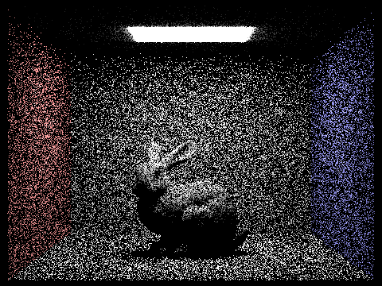 |

|
Soft Shadow Noise vs. Light Samples
All renders below use 1 sample per pixel and light sampling.
|
|
|
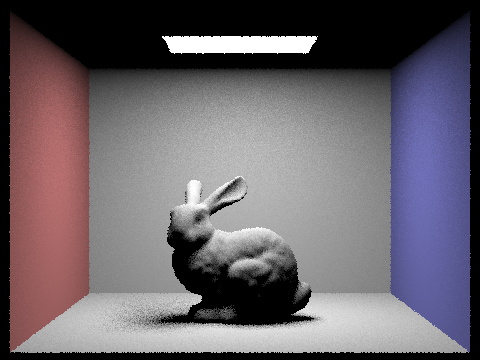 |
|
Light sampling consistently produces cleaner soft shadows than hemisphere sampling at the same budget because it concentrates samples on the light. As we increase -l, variance in penumbrae drops rapidly; by 64 light samples the shadow edges are smooth and the noise is largely confined to the bunny's glossy highlights. Hemisphere sampling wastes many samples in directions that contribute little radiance, so it converges much more slowly.
Part 4: Global Illumination
Global illumination adds indirect lighting by recursively sampling the BSDF and estimating the incoming radiance at each bounce. We compute the direct term via light sampling and then add indirect contributions using Russian roulette to keep the estimator unbiased while limiting depth.
Global Illumination (1024 spp)
|
|
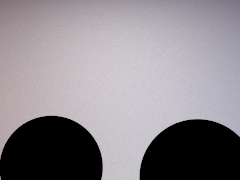 |
Direct vs. Indirect Only (1024 spp)
|
|
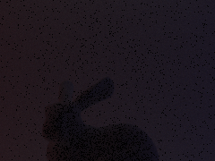 |
Unaccumulated Bounces (CBbunny, 1024 spp)
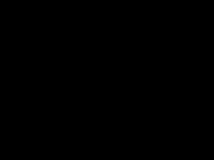 |
||
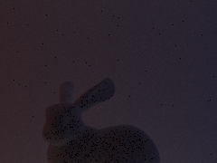 |
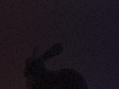 |
Accumulated Bounces (CBbunny, 1024 spp)
 |
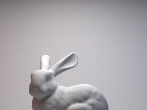 |
|
The 2nd bounce adds soft "fill" from light reflecting off the walls into shadowed regions, while the 3rd bounce further smooths gradients and introduces subtle color bleeding. Compared to rasterization, these higher-order bounces capture energy transport between surfaces that raster pipelines typically approximate with ambient terms.
Russian Roulette (CBbunny, 1024 spp)
|
||
Russian roulette keeps the estimator unbiased while cutting off long paths probabilistically. Increasing max_ray_depth to 100 produces a converged image without exploding render time because many paths terminate early.
Samples per Pixel (CBbunny, -l 4)
We fix the number of light samples to 4 and vary spp. Noise falls roughly with the square root of the sample count, and fine indirect shadowing emerges only at higher spp.
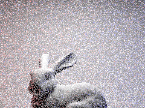 |
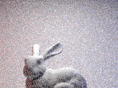 |
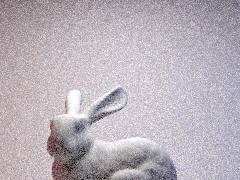 |
|
Part 5: Adaptive Sampling
Adaptive sampling monitors the running mean and variance of the pixel estimator in batches and stops early once the confidence interval (based on variance and maxTolerance) is below a target threshold. We used samplesPerBatch = 32, maxTolerance = 0.05, a cap of 2048 spp, 1 light sample, and max ray depth 5. This focuses computation on high-variance regions while preserving quality in smooth areas.
|
|
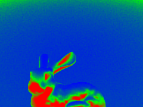 |
|
|
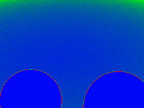 |
Extra Credit
We did not complete any extra credit items for this assignment.
Collaboration
We worked collaboratively by splitting up debugging tasks (intersection/BVH vs. sampling/lighting) and checking each other's renders for correctness and noise issues. Pairing on the harder bugs helped us converge faster, and comparing outputs made it easier to spot subtle errors.